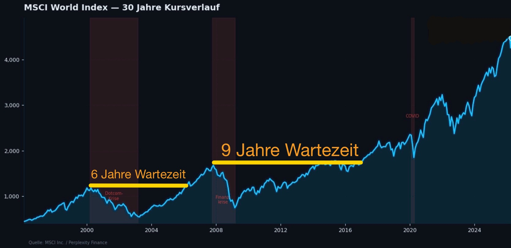

Jemand liefert dir den Durchschnitt.
Ein Berater sagte mir einmal unter vier Augen: „Ich empfehle nicht, was für dich am besten ist. Ich empfehle, was ich empfehlen darf.“ Er ist nicht der Saboteur. Er ist Gefangener seines Systems.

Er nimmt dir kein Geld weg. Er verhindert, dass es wächst: durch Aufschieben, Delegieren und Interessenkonflikte, ohne dass je ein Alarm losgeht. Finanzielle Bildung schützt dich. Und sie ist erlernbar.
Bildung, keine Anlageberatung · WINX-Tower direkt am Main · im Raum und live online
„Leg einfach in den MSCI World, dann machst du 8 % im Jahr.“ Diesen Satz hast du schon oft gehört, von Finfluencern, jungen Bankberatern und Ratgeberportalen. Was sie dir nicht sagen: Die „sicheren 8 %“ sind ein Durchschnitt über Jahrzehnte mit wiederkehrenden Krisen (Drawdowns). Jahre, in denen zuerst Werte vernichtet wurden und es dann extrem lange dauerte, überhaupt das Anfangskapital zurückzuerhalten. Genau hier arbeitet der stille Saboteur. Er unterbricht und vernichtet deinen Zinseszins und damit dein Wachstum und unentdeckt auch deine würdige Rente.

Unvorhergesehene Krisen sind für die Märkte und deine Geldanlage eine ständige Bedrohung und kommen mit Sicherheit. Niemand weiß wann. Private Investoren verlieren! Kein Naturgesetz, aber ein langfristiges Muster. Bis heute! Bereits dein Durchhalten fällt im Drawdown unglaublich schwer. Aktuell hast du drei Möglichkeiten und allen fehlt die entscheidende Zutat …
Dein Wille zur Vorsorge ist richtig. Dein Wunsch nach Selbstbestimmung ist mutig. Dir fehlen nur die richtige Reihenfolge und der rote Faden.
Ein Berater sagte mir einmal unter vier Augen: „Ich empfehle nicht, was für dich am besten ist. Ich empfehle, was ich empfehlen darf.“ Er ist nicht der Saboteur. Er ist Gefangener seines Systems.
Das Internet ist voller Meinungen, nur wenige tragen. Einzelne Videos und KI-Strategien halten, solange die Kurse steigen. Die erste Abwärtsphase trifft dich nachts im Tiefschlaf.
… ist die teuerste deines finanziellen Lebens. Niemand schlägt Alarm. Wer wartet, entscheidet auch, nur gegen sich selbst.
Was kostet dich das Zögern (trage die Jahre, bevor du startest, in „davon gewartet“ ein)? Was kosten dich verlorene Jahre durch Abwärtsbewegungen der Märkte? Und was kostet alles zusammen? Deine eigene Vorstellung, deine Kosten, dein Ergebnis.
Modellrechnung mit deiner frei gewählten Zins-Annahme, keine Renditezusage, keine Prognose. Das Geld wird nicht weggenommen: es entsteht nie. Berechnung nur in deinem Browser, keine Datenübertragung.
Anlageberatung zementiert Abhängigkeit. Finanzbildung schafft Mündigkeit. Wir geben keine Anlage-Empfehlungen, wir vermitteln methodische Vorgehensweisen am Kapitalmarkt: in der richtigen Reihenfolge, von Mensch zu Mensch, ohne Provisionen.
Kurze Lerneinheiten in der richtigen Reihenfolge statt Frontalvortrag. Selbst-Checks mit sofortigem Feedback.
Vier Geldtöpfe geben jedem Euro eine Adresse: Liquidität, Notgroschen, Investition, Risiko.
Keine Vorhersage des Marktes, sondern geübte Reaktionen auf das, was tatsächlich passiert.
„Wir versprechen dir das Können und das Fundament, deinen eigenen Weg zu gehen.“R&F
Vom ersten Überblick über dein Geld bis zum eigenen Regelwerk an der Börse. Dazu eine eigene Welt für Familien.

Dein erster Tag, Investmenttag und Börsentag, Workshops auch einzeln. Ohne Vorwissen, ab 18 – ob mit 20 oder mit 60.
ab 79 € online · ab 129 € im RaumMehr erfahren →
Modul 1A einzeln, Investment Zirkel, Rainmaker Zirkel und Mentoring. Höchstens 12 Plätze im Raum.
ab 199 € online · ab 299 € im RaumMehr erfahren →
Eine Stunde Spielen im WINX-Tower für Familien mit Kindern von 6 bis 9 Jahren.
kostenlos · 19 € Pfand, am Tag zurückMehr erfahren →Online und kostenlos: Sieh dir an, wie wir unterrichten, bevor du dich für einen Tag im Raum entscheidest. Der nächste Termin wird hier angekündigt.
„René ging weit über den Lehrplan hinaus.“
Modellrechnung mit deiner frei gewählten Zins-Annahme, keine Renditezusage, keine Prognose. Das Geld wird nicht weggenommen: es entsteht nie. Berechnung nur in deinem Browser, keine Datenübertragung.